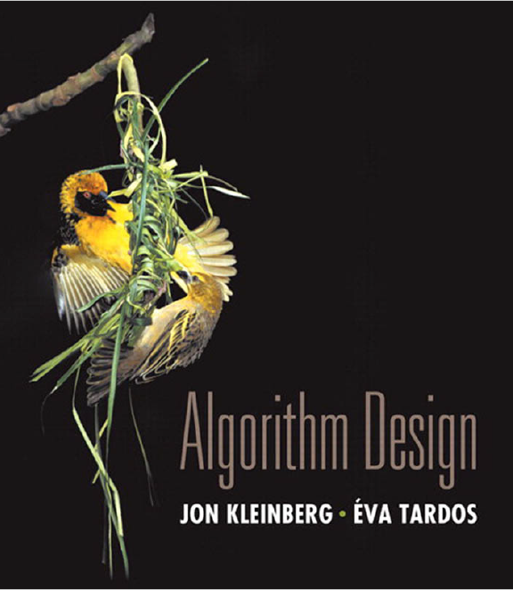
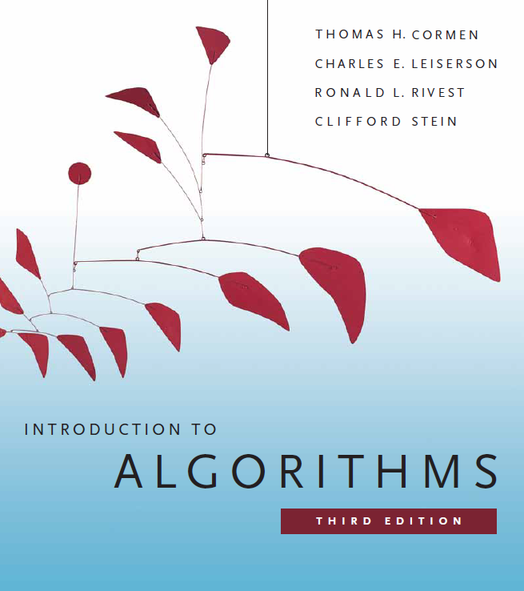
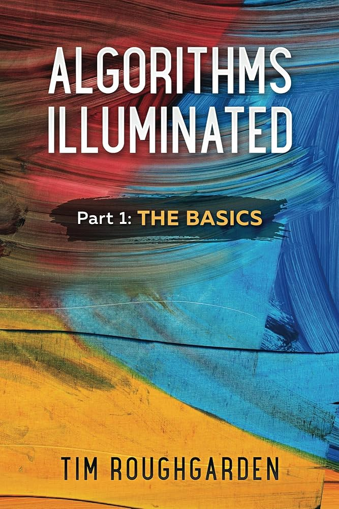

flowchart TD
A[Toom-Cook (1963)<br/>generaliza divide-and-conquer]
B[Karatsuba (1960)<br/>O(n^1.585)]
C[Schonhage-Strassen (1971)<br/>O(n log n log log n)<br/>FFTs]
D[Harvey-van der Hoeven (2019)<br/>O(n log n)<br/>FFTs mais agressivas]
B --> C --> D
Projeto e Análise de Algoritmos I
Aula 01: Introdução
Lucas Nunes Alegre
Universidade Federal do Rio Grande do Sul
Instituto de Informática
Departamento de Informática Teórica
Estes slides utilizam conteúdo adaptado da bibliografia da disciplina e também de notas de aula e slides prévios dos professores Bruno Grisci, Rodrigo Machado, André Grahl Pereira, Lucas Nunes Alegre, Marcus Ritt e Luciana Buriol.
Programa
- Apresentação da disciplina
- Exemplos motivacionais
Apresentação da disciplina
Dados Gerais
Disciplina: INF05027 – Projeto e Análise de Algoritmos I
Professor: Lucas Nunes Alegre
Carga horária: 60h (50 em sala de aula, 10 em atividades autônomas)
Créditos: 4
Sobre o Professor
Lucas Nunes Alegre:
- E-mail: lnalegre@inf.ufrgs.br
- Presencial: Sala 233, prédio 43424 (segundo andar)
Interesses:
- Inteligência Artificial.
- Aprendizado de Máquina
- Aprendizado por Reforço.
- Robótica.
- Análise de Redes.

Motivação
As mudanças no currículo vão na seguinte direção:
- Aprofundar a forma de se estudar algoritmos (sempre com análise de correção e custos)
- Integração natural de teoria e prática
- Reorganizar a exposição de tópicos de forma a seguir as referências da literatura mundial da área
Desta forma, PAA1 + PAA2 no novo currículo cobrem conteúdos que eram vistos de forma não integrada em Teoria dos Grafos e Análise Combinatória, Complexidade de Algoritmos, Classificação e Pesquisa de Dados.
Bibliografia
Bibliografia:
- Algorithm Design. Kleinberg, Jon; Tardos, Éva.
- Algoritmos: Teoria e Prática. Cormen, Thomas H. et. al.
- Algorithms Illuminated (Parts 1, 2, 3). Tim Roughgarden.



Moodle:
https://moodle.ufrgs.br/
- Toda a comunicação oficial.
- Disponibilização de slides, atividades, material complementar.
Repositório
GitHub:
https://github.com/BrunoGrisci/projeto-e-analise-de-algoritmos
- Diversidade de autores e lingugagens de programação.
- Disponibilização de códigos, demos, exemplos.
Avaliação
Atividades avaliadas:
- Prova 1 (3.5pts) - Análise assintótica, teoria dos grafos, algoritmos simples sobre grafos
- Prova 2 (3.5pts) - Algoritmos gulosos, algoritmos gulosos sobre grafos, estruturas de dados avançadas
- Laboratórios (2pt)
- Atividade(s) autônoma(s) (1pt)
NF = 0.35 \times P1 + 0.35 \times P2 + 0.2 \times Lab + 0.1 \times Aut
Conceito definido a partir de NF da forma tradicional: A (\geq9), B (\geq7.5), C (\geq6), D(<6), FF (menos de 75% de frequência).
Laboratórios
- 4 ao longo do semestre
- Atividades avaliadas (0.5 pontos cada)
- Entrega individual, mas discussão e consulta liberadas
- Presencial!
- Implementação de algoritmos/análise na prática
- Ambientes de desafios
- LeetCode: https://leetcode.com/
- beecrowd: https://beecrowd.com/
- \cdots
- Linguagem de programação livre (dentro dos limites das ferramentas)
Atividades de recuperação
Exame de Recuperação
- Prova sobre todo o conteúdo
- Final do semestre
Nova nota final recalculada seguindo a seguinte fórmula:
NE = 0.2 \times NF + 0.8 \times EXAME
Conteúdo
Análise de Algoritmos
- Correção de algoritmos
- Análise assintótica do custo computacional de algoritmos
Grafos: conceitos e algoritmos fundamentais
- Grafos: definição a representações computacionais
- Principais conceitos e algoritmos sobre grafos: busca, componentes, distância.
Estratégia gulosa de projeto de algoritmos:
- Escalonamento e particionamento de intervalos
Algoritmos gulosos para grafos e estruturas de dados avançadas:
- Árvore geradora de custo mínimo (Prim, Kruskal, union-find)
- Distância em grafos com pesos (Dijkstra, priority queues)
Contexto no currículo
Antes:
- INF01202 – ALGORITMOS E PROGRAMAÇÃO - CIC
- INF05008 – PENSAMENTO COMPUTACIONAL N
- INF01203 – ESTRUTURAS DE DADOS
- MAT01375 – MATEMÁTICA DISCRETA B
Depois:
- INF05028 – PROJETO E ANÁLISE DE ALGORITMOS II
- INF05501 – TEORIA DA COMPUTAÇÃO II
- INF01048 – INTELIGÊNCIA ARTIFICIAL
- INF05010 – OTIMIZAÇÃO COMBINATÓRIA
Na verdade
- O estudo dos algoritmos permeia a totalidade da ciência da computação e áreas relacionadas.
Motivação: programação competitiva
Laboratório de Programação Competitiva - LPC:

LPC
Motivação: entrevista técnica

Silicon Valley
Motivação: entrevista técnica
E-mail Entrevista Google:
- Algorithm Complexity: If you struggle with basic big-O complexity analysis, then you are almost guaranteed not to get hired.
- Sorting: Know how to sort.
- Hashtables: Arguably the single most important data structure known to mankind.
- Trees: Know about trees; basic tree construction, traversal and manipulation algorithms.
- Graphs: Graphs are really important at Google.
- Other data structures: You should especially know about the most famous classes of NP-complete problems, . . . Find out what NP-complete means.
- Mathematics, Operating Systems, Coding.
- Final Tips: ***Get your algorithms straight.
Motivação: resolver problemas
 |
 |
 |
 |
Professor, mas e a IA?
IA ajuda, mas não substitui prática: é como aprender um idioma, você precisa treinar para ganhar fluência.
IA não é antagonista: eu pesquiso IA e usei como ferramenta ao longo da disciplina.
Mas você precisa saber conferir: sem base, você não detecta erros, suposições ruins e respostas “convincentes” porém incorretas.
A disciplina não é só “programar”: é aprender a modelar problemas, escolher abordagens e justificar decisões.
Cautela com quem vende IA como solução para tudo (aprenderam antes de haver IA).
Generalização para problemas novos: IA tende a ir bem em soluções canônicas, mas e quando o problema é inédito ou exige uma ideia nova?
Fundamentos que não mudam: corretude, complexidade, limites e trade-offs valem com ou sem IA.
Metodologia transferível: o que você aprende aqui serve para outras áreas (ciência de dados, bio, redes, sistemas, etc.).
E sim, também é divertido!
Exemplos Motivacionais
Projeto e Análise de Algoritmos
Projeto: técnicas para construção
- Busca exaustiva (backtracking).
- Estratégia Gulosa (greedy).
- Divisão e Conquista. (PAA2…)
- Programação Dinâmica. (PAA2…)
- Modelagem e Otimização. (Otimização Combinatória…)
Análise: verificação da qualidade do algoritmo
- Correção
- Custo (em tempo)
- Custo (em espaço)
Algoritmos: processos computacionais
Problema do troco (coin changing)
Objetivo. Dadas denominações de moedas (ex.: \{1, 5, 10, 25, 100\}), pagar um valor usando o menor número de moedas.

Moedas
Problema do troco (coin changing)
Objetivo. Dadas denominações de moedas (ex.: \{1, 5, 10, 25, 100\}), pagar um valor usando o menor número de moedas.
Algoritmo do caixa (guloso). Repetidamente escolha a maior moeda que não excede o valor restante.
Exemplos (ideia)
- 34: pegue 25, depois 5, depois 1,1,1,1.
- 2,89: escolha sempre a maior moeda possível e continue no restante.
Algoritmo do caixa: pseudocódigo
O algoritmo do caixa é ótimo?
Pergunta. O algoritmo do caixa é ótimo para as moedas dos EUA \{1,5,10,25,100\}?
- Sim, algoritmos gulosos são sempre ótimos.
- Sim, para qualquer conjunto c_1 < \cdots < c_n, desde que c_1=1.
- Sim, por propriedades especiais das denominações dos EUA.
- Não.
O algoritmo do caixa é ótimo?
Pergunta. O algoritmo do caixa é ótimo para as moedas dos EUA \{1,5,10,25,100\}?
- Sim, algoritmos gulosos são sempre ótimos.
- Sim, para qualquer conjunto c_1 < \cdots < c_n, desde que c_1=1.
- Sim, por propriedades especiais das denominações dos EUA.
- Não.
Discussão: (A) é falsa em geral; (B) também é falsa; (C) é a correta nesse caso.
O guloso é ótimo para qualquer sistema de moedas?
Resposta curta: não.
Contraexemplo (selo/“postage”): denominações 1, 10, 21, 34, 70, 100, 350, 1225, 1500.

- Guloso para 140: 100 + 34 + 1+1+1+1+1+1 (8 moedas).
- Ótimo: 70 + 70 (2 moedas).
Pode falhar até em viabilidade se c_1>1: denominações 7,8,9.
- Guloso para 15: escolhe 9 e fica preso (não completa).
- Ótimo: 7 + 8.
Propriedades de uma solução ótima (moedas dos EUA)
Para denominações \{1,5,10,25,100\}, qualquer solução ótima satisfaz:
- (P1) número de pennies P \le 4.
Prova por troca: substitua 5 pennies por 1 nickel. - (P2) número de nickels N \le 1.
- (P3) número de dimes D \le 2.
- (P4) número de quarters Q \le 3.
- (P5) N + D \le 2.
Se N=1 e D=2, substitua por 1 quarter.
Consequência chave:
P + 5N + 10D + 25Q \le 99.
(Isto limita o quanto dá para “fazer troco” sem usar moedas de 1 dólar.)
Otimalidade do algoritmo do caixa (moedas dos EUA)
Teorema. O algoritmo do caixa é ótimo para \{1,5,10,25,100\}.
Ideia da prova (indução no valor x):
- Considere c_k \le x < c_{k+1}. O guloso escolhe c_k.
- Mostra-se que qualquer solução ótima também precisa usar c_k: caso contrário, teria de compor x só com c_1,\dots,c_{k-1}, mas isso é impossível por limites como P\le4, N\le1, N+D\le2, Q\le3.
- Então o problema reduz a x - c_k, resolvido otimalmente pelo guloso (hipótese de indução).
Intuição: a prova é um “argumento de troca” + indução.
Proposição: solução ótima única (incluindo moedas de 1 dólar)
Proposição. O algoritmo do caixa produz a única solução ótima para \{1,5,10,25,100\}.
Esboço (caso das moedas de 1 dólar):
- Para um valor x.yy, o guloso escolhe x moedas de 1 dólar.
- Suponha, por contradição, que exista solução ótima com menos de x dólares.
- Então o restante em \{1,5,10,25\} precisa somar \ge 100, isto é, P + 5N + 10D + 25Q \ge 100, contradizendo o limite \le 99.
- Argumentos análogos justificam as escolhas gulosas para quarters, dimes e nickels.
Multiplicação de inteiros
Desde o ensino fundamental aprendemos algoritmos.
Por exemplo, vamos realizar a seguinte multiplicação!
1234 \times 5678 = ~?
Você consegue…
- descrever precisamente o método utilizado?
- justificar a sua correção?
- estimar o seu custo (em tempo)?
Algoritmo tradicional de multiplicação (ATM)
\begin{array}{lccccccccccr} &&& & 1 & 2 & 3 & 4 && =x\\ &&&\times & 5 & 6 & 7 & 8 & & =y\\ \hline &&&&9&8&7&2&&\\ &&&8&6&3&8&&&\\ &&7&4&0&4&&&&\\ &6&1&7&0&&&&&+\\ \hline &7&0&0&6&6&5&2 \end{array}
Algoritmo tradicional de multiplicação:
- multiplique x por cada dígito de y, obtendo um resultado parcial deslocado pela posição do dígito de y
- some todos os resultados parciais
Correção de ATM
\begin{array}{cccccccccccc} (& 1\cdot10^3 &+& 2\cdot10^2 &+& 3\cdot10^1 &+& 4\cdot10^0&) & +\\ (& 5\cdot10^3 &+& 6\cdot10^2 &+& 7\cdot10^1 &+& 8\cdot10^0&)& =\\ \hline (& 1\cdot5 &)&&&&&&& \cdot10^6\\ (& 1\cdot6 &+&2\cdot5&)&&&&& \cdot10^5\\ (& 1\cdot7 &+&2\cdot6&+&3\cdot5&)&&& \cdot10^4\\ (& 1\cdot8 &+&2\cdot7&+&3\cdot6&+&4\cdot5&)& \cdot10^3\\ (& 2\cdot8 &+&3\cdot7&+&4\cdot6&)&&& \cdot10^2\\ (& 3\cdot8 &+&4\cdot7&)&&&&& \cdot10^1\\ (& 4\cdot8 &)&&&&&&& \cdot10^0 \end{array}
Custo da multiplicação tradicional (método da escola)
Exemplo (2 dígitos):
\begin{array}{rcccc} &&&3&2\\ \times&&&5&6\\ \hline &&&1&2\\ &&1&8&\\ &&1&0&\\ &1&5&&\\ \hline &1&7&9&2 \end{array}
- 4 multiplicações de 1 dígito (2\times2)
- 3 somas (para combinar termos e carry)
Generalização (n dígitos):
Se x e y têm n dígitos, o algoritmo tradicional faz uma grade de produtos entre todos os pares de dígitos:
\underbrace{n\times n}_{\text{pares de dígitos}} \Longrightarrow n^2\ \text{multiplicações de 1 dígito.}
As somas (incluindo carries) para acumular os resultados também custam, no máximo:
\text{somas/carries}=O(n^2).
Portanto, contando operações elementares:
T(n)=\Theta(n^2).
Mas….
- Será que este é o melhor algoritmo para multiplicação de inteiros? Não daria para melhorar?
- A história da computação envolve o constante avanço sobre o que é conhecido, até se encontrar os reais limites de um dado processo.
- Em 1960, Kolmogorov propôs a conjectura de que multiplicação de inteiros seria \Omega(n^2).
- Em uma semana, Anatoly Karatsuba (23 anos) propôs um algoritmo mais rápido: \Theta(n^{\log_2 3}) \approx \Theta(n^{1.58}).

Andrei Nikolaevich Kolmogorov

Anatolii Alexeievitch Karatsuba
Karatsuba: ideia
Motivação (2 dígitos, base 10):
Se x=ab=a\cdot 10+b e y=cd=c\cdot 10+d, então:
(a\cdot 10+b)(c\cdot 10+d)=ac\cdot 10^2 + (ad+bc)\cdot 10 + bd.
. . .
O truque é reescrever o termo do meio com a seguinte identidade:
ad+bc=(a+b)(c+d)-ac-bd.
. . .
Generalização (qualquer número de dígitos):
Escolha m\approx\lceil n/2\rceil e defina B=10^m. Separe cada número em parte alta e baixa:
x=x_1B+x_0,\qquad y=y_1B+y_0,\qquad\text{com }x_0,y_0<B.
. . .
Então
xy=z_2B^2+z_1B+z_0,
onde Karatsuba calcula com 3 multiplicações:
z_2=x_1y_1,\qquad z_0=x_0y_0,\qquad z_1=(x_1+x_0)(y_1+y_0)-z_2-z_0.
Algoritmo de Karatsuba para Multiplicação (AKM)
\begin{array}{rrrr} & \overbrace{12}^{a} & \overbrace{34}^{b} \\ \times & \overbrace{56}^{c} & \overbrace{78}^{d} \\ \hline R1\cdot 10^4 &+\; R4\cdot 10^2 &+\; R2 \end{array}
Algoritmo de Karatsuba:
- calcule R1 = a\cdot c
- calcule R2 = b\cdot d
- calcule R3 = (a+b)\cdot(c+d)
- calcule R4 = R3-R2-R1
- devolva (R1\cdot10^4 + R4\cdot10^2 + R2)
Obs: R4\cdot10^2 pois 2 é o tamanho de b (e d), e R1\cdot10^4 pois 4 é o dobro do mesmo tamanho. Se o corte for diferente (largura de b e d), esses expoentes variam de acordo.
Visualização: https://brunogrisci.github.io/karatsuba
Correção do AKM
Correção baseada nas seguintes identidades algébricas:
\begin{array}{rcl} 1234 \cdot 5678 &=& (12\cdot 10^2 + 34)(56\cdot 10^2 + 78)\\ &=& (12\cdot56)\cdot10^4 + (12\cdot78 + 34\cdot56)\cdot10^2 + (34\cdot78)\\ \\ R1 &=& (12\cdot56)\\ R2 &=& (34\cdot78)\\ R3 &=& (12+34)(56+78)\\ &=& (12\cdot56)+(12\cdot78+34\cdot56)+(34\cdot78)\\ R4 &=& R3-R2-R1 \end{array}
Análise de custo do AKM
\text{Se } n = 2^k\ \text{(número de dígitos), então o Karatsuba faz } 3^k\ \text{multiplicações.}
A cada nível da recursão, o número é dividido ao meio: 2^k\to 2^{k-1}\to \cdots \to 2^0=1.
Logo, são necessários k níveis para chegar a subproblemas de 1 dígito, e em cada nível o Karatsuba cria 3 subprodutos, totalizando 3^k.
3^k = 3^{\log_2 n} = n^{\log_2 3} \approx n^{1.58}.
Considerações sobre hardware
- Melhoria assintótica: \log_2 3 \approx 1{,}585. O algoritmo escolar usa \mathcal{O}(n^2) multiplicações; Karatsuba reduz para \mathcal{O}(n^{1{,}585}) quando n cresce.
- Na prática: o ganho depende de como o computador multiplica inteiros. Muitos processadores possuem multiplicador em hardware para tamanhos fixos, por exemplo 32 bits \times 32 bits.
- Representação em base 2^{31}: em vez de separar em potências de 10, usamos blocos adequados ao hardware: x = a\cdot2^{31}+b, onde a e b cabem em 32 bits.
- Arquitetura: o custo relativo de adições, acessos à memória e multiplicações varia por geração. Em arquiteturas modernas, a diferença entre soma e multiplicação diminuiu.
Algoritmos de multiplicação de inteiros longos
- Clássico (escolar): \mathcal{O}(n^2) costuma ganhar para n pequeno (baixo overhead).
- Karatsuba/Toom-Cook: reduzem multiplicações via truques algébricos; muito usados em bibliotecas e criptografia.
- Schönhage-Strassen: usa FFTs para multiplicar por convolução; domina em inteiros com dezenas a centenas de milhares de dígitos.
- Harvey-van der Hoeven: alcança \mathcal{O}(n\log n), mas é galáctico (ponto de virada impraticável hoje).
- Karatsuba, 1962: http://mi.mathnet.ru/dan26729
- Harvey, 2019: https://doi.org/10.4007/annals.2021.193.2.4
Concluindo
- Notem que neste pequeno exemplo trabalhamos com algoritmos no “papel”, porém as mesmas perguntas valem para algoritmos rodando em sistemas computacionais.
- Neste primeiro mês, vamos abordar a base para a análise de correção e de custos de algoritmos, em particular a notação assintótica.
- Daqui para a frente, a ideia é saber desenvolver algoritmos tendo uma compreensão profunda sobre por que ele funciona e sermos capazes de estimar o seu respectivo custo (em espaço e memória).